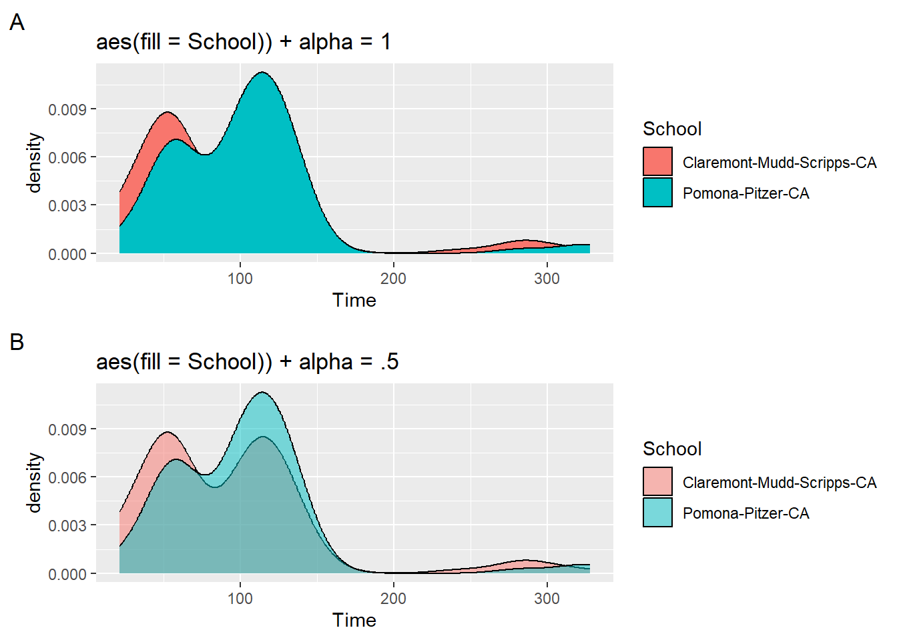

source(here::here("r", "my_functions.R"))Histograms and density plots
Under construction.
This page is a work in progress and may contain areas that need more detail or that required syntactical, grammatical, and typographical changes. If you find some part requiring some editing, please let me know so I can fix it for you.
Overview
This module focuses on the Cartesian Coordinate system and visualizing data distributions using {ggplot2} geom_histogram() and geom_density(). This module demonstrates some ways to visualize the distribution of a single variable along either the x or y axis. When adding another aesthetic (e.g., fill), this distribution could be visualized along the x axis but for different groupings for a second, fill variable. Visualizations containing multiple levels of a second variable create problems for geom_histogram() out-of-the-box which can be addressed with geom_density() but this approach too can create perceptual problems for more complicated plots. We will also address ways to solve the limitations of visualizing more complex data arrangement in a later section and introduce the {ggridges} library to produce geom_ridgeline() plots.
To Do
Readings
Reading should take place in two parts:
- Prior to class, the goal should be to familiarize yourself and bring questions to class. The readings from TFDV are conceptual and should facilitate readings from EGDA for code implementation.
- After class, the goal of reading should be to understand and implement code functions as well as support your understanding and help your troubleshooting of problems.
Before Class: First, read to familiarize yourself with the concepts rather than master them. Understand why one would want to visualize data in a particular way and also understand some of the functionality of {ggplot2}. I will assume that you attend class with some level of basic understanding of concepts.
Class: In class, some functions and concepts will be introduced and we will practice implementing {ggplot2} code. On occasion, there will be an assessment involving code identification, correction, explanation, etc. of concepts addressed in previous modules and perhaps some conceptual elements from this week’s readings.
After Class: After having some hands-on experience with coding in class, homework assignments will involve writing your own code to address some problem. These problems will be more complex, will involving problem solving, and may be open ended. This is where the second pass at reading with come in for you to reference when writing your code. The module content presented below is designed to offer you some assistance working through various coding problems but may not always suffice as a replacement for the readings from Wickham, Navarro, & Pedersen (under revision). ggplot2: Elegant Graphics for Data Analysis (3e).
External Functions
Provided in class:
view_html(): for viewing data frames in html format, from /r/my_functions.R
You can use this in your own work space but I am having a challenge rendering this of the website, so I’ll default to print() on occasion.
Libraries
- {dplyr} 1.1.2: for selecting, filtering, and mutating
- {magrittr} 2.0.3: for code clarity and piping data frame objects
- {ggplot2} 3.4.3: for plotting
Load libraries
library(dplyr)
library(magrittr)
library(ggplot2)Loading Data
For this exercise, we will use some data from a 2023 CMS swim meet located at: “https://github.com/slicesofdata/dataviz23/raw/main/data/swim/cleaned-2023-CMS-Invite.csv”.
SWIM <- readr::read_csv("https://github.com/slicesofdata/dataviz23/raw/main/data/swim/cleaned-2023-CMS-Invite.csv",
show_col_types = F)Histograms
geom_histogram()
The histogram will plot the counts of common instances within a vector. Plotting a geom_histogram() will require mapping a variable to either x or y in aes(). The only difference will be the distribution orientation, which could have course be changed also with coord_flip().
If x = Time:
SWIM %>%
ggplot(., aes(x = Time)) +
geom_histogram()`stat_bin()` using `bins = 30`. Pick better value with `binwidth`.
If y = Time:
SWIM %>%
ggplot(., aes(y = Time)) +
geom_histogram()`stat_bin()` using `bins = 30`. Pick better value with `binwidth`.If you have both x and y mapped, you will get an error.
SWIM %>%
ggplot(., aes(x = Distance, y = Time)) +
geom_histogram()Error in `geom_histogram()`:
! Problem while computing stat.
ℹ Error occurred in the 1st layer.
Caused by error in `setup_params()`:
! `stat_bin()` must only have an x or y aesthetic.
Histograms depend on the chosen bin width
Setting bins Number
The bins parameter in geom_histogram() controls number of bins, defaults to 30, and is overridden by the binwidth argument. Depending on your data, this may or may not provide the best representation of data. You can also specify the number of bins. This will force geom_histogram() to adjust the bin width based on the number of bind you specify. Let’s create two examples.
plot1 <- SWIM %>%
filter(Time < 500) %>%
ggplot(., aes(Time)) +
geom_histogram(bins = 20) +
labs(title = "bins = 20", tag = "A")
plot2 <- SWIM %>%
filter(Time < 500) %>%
ggplot(., aes(Time)) +
geom_histogram(bins = 60) +
labs(title = "bins = 60", tag = "B")Because the total number of bins will capture all frequency counts in the data, setting fewer bins will result in plots that have more counts per bin than will plots with many bins. Examine the counts along the y-axis to see this.
plot(gridExtra::arrangeGrob(plot1, plot2, ncol = 2))
Not only is the narrowness of the bars associated with more bins but the this is the result of fewer counts, which ultimately affects your range along the y axis. This means that when you plot two bars side-by-side (to facilitate comparison of bars by their heights), the height will be confounded by the scale; you are not comparing bars on aligned scales (See Cleveland & McGill (1984)). This results in perceptual problems.
Setting binwidth
When you plot a geom_histogram(), R reminds you to consider the binwidth by providing the error: stat_bin() using bins = 30. Pick better value with binwidth. The binwidth argument controls the bin width along the X-axis and this argument overrides the bin argument.
You could make your bin width narrow relative to the data being plotted. For example, 1/10 of a second (e.g., binwidth = .1) for swim events. Similarly, if your vector contains discrete values, binwidth = 1 would plot the frequency count for all instances.
plot1 <- SWIM %>%
filter(Time < 500) %>%
ggplot(aes(Time)) +
geom_histogram(binwidth = .1) +
labs(title = "binwidth = .1", tag = "A")But this produces a very granular plot that is not very useful. The counts are so few and the distribution is not very apparent visually. By contrast, if you set it too wide (e.g., binwidth = 30), then you might loose a lot of detail. Notice also that the x axis does not provide tick marks that help with the binning, whether narrow or wide.
plot2 <- SWIM %>%
filter(Time < 500) %>%
ggplot(aes(Time)) +
geom_histogram(binwidth = 30) +
labs(title = "binwidth = 30", tag = "B")plot(gridExtra::arrangeGrob(plot1, plot2, ncol = 2))Is this better?
plot3 <- SWIM %>%
filter(Time < 500) %>%
ggplot(., aes(Time)) +
geom_histogram(binwidth = 5) +
labs(title = "binwidth = 5", tag = "C")plot(gridExtra::arrangeGrob(plot1, plot2, ncol = 1))Center the bin
Once you are happy with the width, you can think about centering them. center will be used to specify the center of the bin containing the bin value. For now, there is some adjustment, though not perfect, to the scale to see the differences.
plot1 <- SWIM %>%
filter(Time < 200) %>%
ggplot(., aes(Time)) +
geom_histogram(binwidth = 10) +
ggtitle("binwidth = 10") +
# add some detailing to better see
scale_x_continuous(breaks = seq(0, 350, 10)) +
labs(title = "default center", tag = "A")
plot2 <- SWIM %>%
filter(Time < 200) %>%
ggplot(., aes(Time)) +
geom_histogram(binwidth = 10,
center = 1) +
# add some detailing to better see
scale_x_continuous(breaks = seq(0, 350, 10)) +
labs(title = "center = 1", tag = "B")
plot3 <- SWIM %>%
filter(Time < 200) %>%
ggplot(., aes(Time)) +
geom_histogram(binwidth = 10,
center = 0) +
# add some detailing to better see
scale_x_continuous(breaks = seq(0, 350, 10)) +
labs(title = "center = 0", tag = "C")
plot4 <- SWIM %>%
filter(Time < 200) %>%
ggplot(., aes(Time)) +
geom_histogram(binwidth = 10,
center = 5) +
# add some detailing to better see
scale_x_continuous(breaks = seq(0, 350, 10)) +
labs(title = "center = 5", tag = "D")
plot(gridExtra::arrangeGrob(plot1, plot2, plot3, plot4, ncol = 2))
For more details on center, see ?geom_histogram.
Color and other Aesthetics
And can also change the color of the bars in the histogram or make them transparent (e.g., fill = "transparent").
plot1 <- SWIM %>%
filter(Time < 500) %>%
ggplot(., aes(Time)) +
geom_histogram(
fill = "tomato2",
color = "black",
linetype = "dashed"
) +
labs(title = 'fill = "tomato2"\nlinetype = "dashed"',
tag = "A"
)
plot2 <- SWIM %>%
filter(Time < 500) %>%
ggplot(., aes(Time)) +
geom_histogram(
fill = "transparent",
color = "tomato2",
linetype = "solid"
) +
labs(title = 'color = "tomato2"\nlinetype = "solid"',
tag = "B"
)Two arrangements of the plots illustrate their differences.
patchwork::plot_layout(plot1 + plot2)$ncol`stat_bin()` using `bins = 30`. Pick better value with `binwidth`.
`stat_bin()` using `bins = 30`. Pick better value with `binwidth`.
$nrow
NULL
$byrow
NULL
$widths
NULL
$heights
NULL
$guides
NULL
$tag_level
NULL
$design
NULL
attr(,"class")
[1] "plot_layout"patchwork::plot_layout(plot1 / plot2)$ncol`stat_bin()` using `bins = 30`. Pick better value with `binwidth`.
`stat_bin()` using `bins = 30`. Pick better value with `binwidth`.
$nrow
NULL
$byrow
NULL
$widths
NULL
$heights
NULL
$guides
NULL
$tag_level
NULL
$design
NULL
attr(,"class")
[1] "plot_layout"Stacked histograms
You can stack bars in histograms just as you did with geom_bar(). Mapping a variable to fill will introduce the distribution for levels of the fill variable. However, if you think stacking a histogram will be useful, it really isn’t.
SWIM %>%
ggplot(., aes(x = Time, fill = Team)) +
geom_histogram()`stat_bin()` using `bins = 30`. Pick better value with `binwidth`.Even if the bars are not opaque, they are not much better. In general, histograms with overlapped bars a rarely useful.
SWIM %>%
ggplot(., aes(x = Time, fill = Team)) +
geom_histogram(alpha = .5)`stat_bin()` using `bins = 30`. Pick better value with `binwidth`.There are certainly things that you can do to the plot but there are better options.
Histograms with y as Density
The default operation of geom_histogram() is to plot the frequency counts along the y axis corresponding to the x variable mapped in aes(). The statistical transformation adjusted using after_stat(). You will see that the default mapping to the y variable is after_stat(count). We can add this explicitly either in geom_histogram() to across ggplot() and geom_histogram()
For example:
ggplot(.) +
geom_histogram(mapping = aes(x = Time,
y = after_stat(count)
)
)
ggplot(., mapping = aes(x = Time)) +
geom_histogram(mapping = aes(y = after_stat(count)))after_stat(count)
(plot1 <- SWIM %>%
filter(Time < 500) %>%
ggplot(.) +
geom_histogram(aes(x = Time,
y = after_stat(count)
)
) +
labs(title = 'aes(y = after_stat(count))',
tag = "A")
)`stat_bin()` using `bins = 30`. Pick better value with `binwidth`.
The plot looks the same as we have seen before because this is the default operation. We can, however, change the statistical transformation using after_stat() to create a density plot.
after_stat(density)
(plot2 <- SWIM %>%
filter(Time < 500) %>%
ggplot(.) +
geom_histogram(aes(x = Time,
y = after_stat(density)
)
) +
labs(title = 'aes(y = after_stat(density))',
tag = "B"
)
)`stat_bin()` using `bins = 30`. Pick better value with `binwidth`.
Using {patchwork} to create a grob, we can add divide the grid space using / so that the plots are on top of each other.
patchwork::plot_layout(plot1 / plot2)$ncol`stat_bin()` using `bins = 30`. Pick better value with `binwidth`.
`stat_bin()` using `bins = 30`. Pick better value with `binwidth`.
$nrow
NULL
$byrow
NULL
$widths
NULL
$heights
NULL
$guides
NULL
$tag_level
NULL
$design
NULL
attr(,"class")
[1] "plot_layout"Notice, however, that the visualization of the binned bars along with the density function does not provide provide what you might expect to see. That’s because a density function is continuous whereas histograms are not.
If you add a density layer, you can see them both together:
plot2 + geom_density(aes(x = Time))`stat_bin()` using `bins = 30`. Pick better value with `binwidth`.More on geom_density() later.
Histogram as Proportion of Counts
Not everyone is adept at reading histogram distributions representing frequency counts or probability densities. Sometimes you just want to plot the data such that your y-axis represent percentages. With new versions of {ggplot2}, you will accomplish this using the after_stat() function.
Just to illustrate what’s going on, we can use the after_stat() default with geom_histogram() to see what it does and then we can edit it.
(plot1 <- SWIM %>%
filter(Time < 500) %>%
ggplot(., aes(Time)) +
geom_histogram() +
labs(title = "default",
tag = "A")
)`stat_bin()` using `bins = 30`. Pick better value with `binwidth`.Because geom_histogram() is applying the statistical transformation, stat as the frequency count and plotting along the y-axis, we can add after_stat(count) to y inside the aes() and see what happens to the plot.
(plot2 <- SWIM %>%
filter(Time < 500) %>%
ggplot(., aes(Time)) +
geom_histogram(aes(y = after_stat(count))) +
labs(title = "aes(y = after_stat(count))",
tag = "B"
)
)`stat_bin()` using `bins = 30`. Pick better value with `binwidth`.
But because a proportion of counts in a bin is calculated as counts in bin/ sum of all counts, we can specify the math aes(y = after_stat(count)/sum(after_stat(count))).
plot3 <- SWIM %>%
filter(Time < 500) %>%
ggplot(., aes(Time)) +
geom_histogram(aes(y = after_stat(count)/sum(after_stat(count)))) +
labs(title = "count/sum(counts)",
tag = "C")Looking at the plots together:
plot(gridExtra::arrangeGrob(plot1, plot2, plot3, ncol = 1))`stat_bin()` using `bins = 30`. Pick better value with `binwidth`.
`stat_bin()` using `bins = 30`. Pick better value with `binwidth`.
`stat_bin()` using `bins = 30`. Pick better value with `binwidth`.And although adjusting scales is addressed in a different module, we can clean up the scale here just as an example of how scale functions can clean up axes. We would need to do something like adjust the tick labels on the y axis as percents using scale_y_continuous(labels = scales::percent).
Creating geom_*()s with stat_bin
Histograms using stat_bin
Although you are familiar with the usage of geom_()s that include statistical transformations (remember all plots have a stat_()), statistical transformation functions with naming convention stat_*() allow for geoms. For stat_bin, which create bins, the default geom = "bar" and position = "stack", which you saw with the stacking of the colored bars using geom_histogram().
stat_bin(
mapping = NULL,
data = NULL,
geom = "bar",
position = "stack",
...,
binwidth = NULL,
bins = NULL,
center = NULL,
boundary = NULL,
breaks = NULL,
closed = c("right", "left"),
pad = FALSE,
na.rm = FALSE,
orientation = NA,
show.legend = NA,
inherit.aes = TRUE
)geom = "bar"
SWIM %>%
filter(Time < 500) %>%
ggplot(., aes(Time)) +
stat_bin(
geom = "bar"
)`stat_bin()` using `bins = 30`. Pick better value with `binwidth`.Densities or Area Plots using stat_bin
geom = "density"
geom = "area"
stat = "density"plot1 <- SWIM %>%
filter(Time < 500) %>%
ggplot(., aes(Time)) +
stat_bin(
geom = "density",
fill = "gold",
col = "black"
) +
labs(title = 'geom = "density"',
tag = "A"
)
plot2 <- SWIM %>%
filter(Time < 500) %>%
ggplot(., aes(Time)) +
stat_bin(
geom = "area",
fill = "gold",
col = "black"
) +
labs(title = 'geom = "area"',
tag = "B"
)
plot(gridExtra::arrangeGrob(plot1, plot2, ncol = 1))`stat_bin()` using `bins = 30`. Pick better value with `binwidth`.
`stat_bin()` using `bins = 30`. Pick better value with `binwidth`.
As you can see, the geom settings produce the same plots.
Kernel Density Estimate (KDE) Plots
Whereas histograms display raw counts, KDEs display proportions. (Total area = 1)
geom_density()
geom_density(
mapping = NULL,
data = NULL,
stat = "density",
position = "identity",
...,
na.rm = FALSE,
orientation = NA,
show.legend = NA,
inherit.aes = TRUE,
outline.type = "upper"
)We can also change aesthetics using:
- color: line color
- size: line thickness
- linetype: line type
- fill: fill color of the area
- alpha: opacity/transparencyLet’s crest some plots.
plot1 <- SWIM %>%
filter(Time < 500) %>%
ggplot(., aes(Time)) +
geom_density() +
labs(title = "no fill", tag = "A")
plot2 <- SWIM %>%
filter(Time < 500) %>%
ggplot(., aes(Time)) +
geom_density(fill = "gold") +
labs(title = 'fill = "gold"', tag = "B")
plot3 <- SWIM %>%
filter(Time < 500) %>%
ggplot(., aes(Time)) +
geom_density(
fill = "gold",
bw = 0.5, # a very small bandwidth
kernel = "gaussian" # Gaussian kernel (the default)
) +
labs(title = 'fill = "gold"\nkernel = "gaussian"', tag = "C")
plot4 <- SWIM %>%
filter(Time < 500) %>%
ggplot(., aes(Time)) +
geom_density(
fill = "gold",
bw = 50, # a larger bandwidth
kernel = "rectangular" # Gaussian kernel (the default)
) +
labs(title = 'fill = "gold"\nkernel = "rectangular"', tag = "D")
plot(gridExtra::arrangeGrob(plot1, plot2, plot3, plot4, ncol = 2))The plots present the data in different ways. Choosing the best type of plot will involve some consideration. You should not feel compelled to use plots out-of-the-box.
Mapping a fill variable
In the earlier example, we set fill = "gold" but we could also map fill to an existing variable in the data frame. By default, the fill will be opaque, so you might be better off with an alpha adjustment.
plot1 <- SWIM %>%
filter(Time < 500) %>%
ggplot(., aes(Time)) +
geom_density(aes(fill = School)) +
labs(title = 'aes(fill = School)) + alpha = 1', tag = "A")
plot2 <- SWIM %>%
filter(Time < 500) %>%
ggplot(., aes(Time)) +
geom_density(aes(fill = School), alpha = .5) +
labs(title = 'aes(fill = School)) + alpha = .5', tag = "B")
plot(gridExtra::arrangeGrob(plot1, plot2, ncol = 1))
Although the alpha may not be the best with this setting, you can now see all of the distributions. Mapping a variable to fill will always result in plot using the same x-axis positioning. In other words, you will always have plots that will overlap unless of course the distributions are naturally far apart. We will introduce other approaches to distributions on different horizontal levels if the goal is to present the grouping in a way that prevents visual overlap.
Session Info
R version 4.3.1 (2023-06-16 ucrt)
Platform: x86_64-w64-mingw32/x64 (64-bit)
Running under: Windows 11 x64 (build 22621)
Matrix products: default
locale:
[1] LC_COLLATE=English_United States.utf8
[2] LC_CTYPE=English_United States.utf8
[3] LC_MONETARY=English_United States.utf8
[4] LC_NUMERIC=C
[5] LC_TIME=English_United States.utf8
time zone: America/Los_Angeles
tzcode source: internal
attached base packages:
[1] stats graphics grDevices utils datasets methods base
other attached packages:
[1] ggplot2_3.4.3 magrittr_2.0.3 dplyr_1.1.2
loaded via a namespace (and not attached):
[1] bit_4.0.5 gtable_0.3.4 jsonlite_1.8.7 crayon_1.5.2
[5] compiler_4.3.1 tidyselect_1.2.0 parallel_4.3.1 gridExtra_2.3
[9] scales_1.2.1 yaml_2.3.7 fastmap_1.1.1 here_1.0.1
[13] readr_2.1.4 R6_2.5.1 patchwork_1.1.3 labeling_0.4.2
[17] generics_0.1.3 curl_5.0.2 knitr_1.43 htmlwidgets_1.6.2
[21] tibble_3.2.1 munsell_0.5.0 rprojroot_2.0.3 pillar_1.9.0
[25] tzdb_0.4.0 rlang_1.1.1 utf8_1.2.3 xfun_0.40
[29] bit64_4.0.5 cli_3.6.1 withr_2.5.0 digest_0.6.33
[33] grid_4.3.1 vroom_1.6.3 rstudioapi_0.15.0 hms_1.1.3
[37] lifecycle_1.0.3 vctrs_0.6.3 evaluate_0.21 glue_1.6.2
[41] farver_2.1.1 fansi_1.0.4 colorspace_2.1-0 rmarkdown_2.24
[45] tools_4.3.1 pkgconfig_2.0.3 htmltools_0.5.6